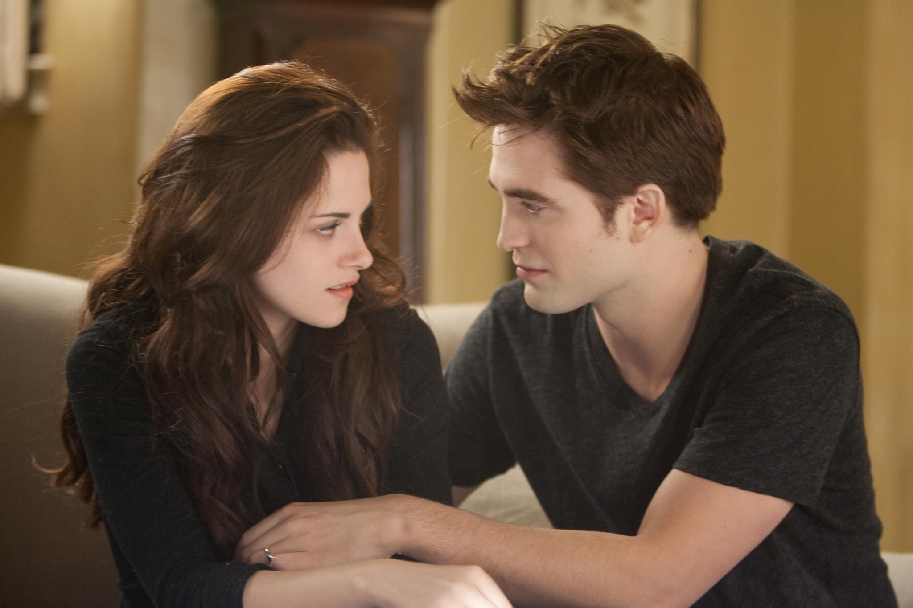

Сумерки — это серия фантастических/романтических романов Стефани Майер. Она рассказывает о жизни Изабеллы «Беллы» Свон, подростка-человека, которая переезжает в Форкс, и ее жизнь переворачивается с ног на голову, когда она влюбляется в вампира по имени Эдвард Каллен.
Если Вы только начали смотреть/читать произведение, будьте осторожны. Мы не рекомендуем читать статьи об частях истории, которые вы ещё не смотрели/читали, а также статьи о персонажах и местах, так как там может оказаться информация со спойлерами.
Внимание! Для просмотра информации на вкладках "Вселенная" и "Актеры" необходимо авторизоваться!
